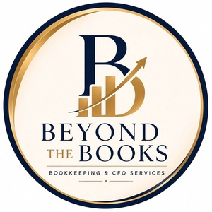

✦
01 / CORE
Monthly bookkeeping
Transaction categorization, bank and credit-card reconciliations, and month-end close support that keeps your records current and dependable.
Build a steady rhythm ↗
BEYONDTHE BOOKSFinancial clarity for the people building something beautiful
Bookkeeping and fractional CFO support for barbershops and salons that want clean books, calmer decisions, and a clearer path to growth.
More than a transaction log
When your books are current and your reports make sense, you can spend less time second-guessing and more time leading your business.
01 / CORE
Transaction categorization, bank and credit-card reconciliations, and month-end close support that keeps your records current and dependable.
Build a steady rhythm ↗02 / VISIBILITY
Profit and loss, balance sheet, cash flow, and management reports translated into a view you can actually use.
See the bigger picture ↗03 / RESET
A structured review of approximately 3–12 months of records, depending on account volume and condition.
Get back on track ↗04 / SUPPORT
Payroll processing, invoice entry, payment tracking, vendor and customer follow-up, and aging reports.
Lighten the load ↗A process you can trust
Every engagement is built around clear scope, careful review, and communication that respects your time.
Let’s work together ↗We align on your business, current records, deadlines, and what support would make the biggest difference.
We agree on access, responsibilities, and a written engagement before work begins.
I reconcile, review, report, and flag the questions or unusual items that need your attention.
Work that creates visibility
A full-year anonymized example from a multi-channel salon retail bookkeeping engagement.
Illustrative portfolio example based on supplied financial statements and extended into a full-year case narrative. Business name, location, tax identifier, exact figures, and identifying details have been changed or omitted. Unaudited; internal management use only.
Meet your numbers partner
Bookkeeper and Fractional CFO with 7+ years of experience across full-cycle bookkeeping, payroll, financial reporting, and finance management. I work remotely with US-based businesses, with a focus on barbershops and salons.
Your next clear decision
Tell me where things stand, and we’ll map the right next step.
Book your clarity call ↗Prefer email? Start a conversation